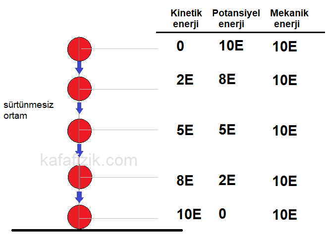

Enerjinin Korunumu

Enerjinin korunumu yasası, kapalı/izole bir sistemde toplam enerji miktarının sabit kaldığını, enerjinin yoktan var edilemeyeceğini ve var olan enerjinin yok edilemeyeceğini belirtir. Enerji yalnızca potansiyel, kinetik, ısı veya kimyasal gibi farklı biçimlere dönüşebilir. Örneğin, bir cismin mekanik enerjisi (potansiyel + kinetik), sürtünme yoksa korunur
Kinetik Enerji
Ke=1/2mV2
Dönme Kinetik Enerji
Ke=1/2Iω2
Kütleçekim Potansiyel Enerjisi
Ug=mgh
İş-Enerji Teoremi
ΔE=ΔK+ΔU